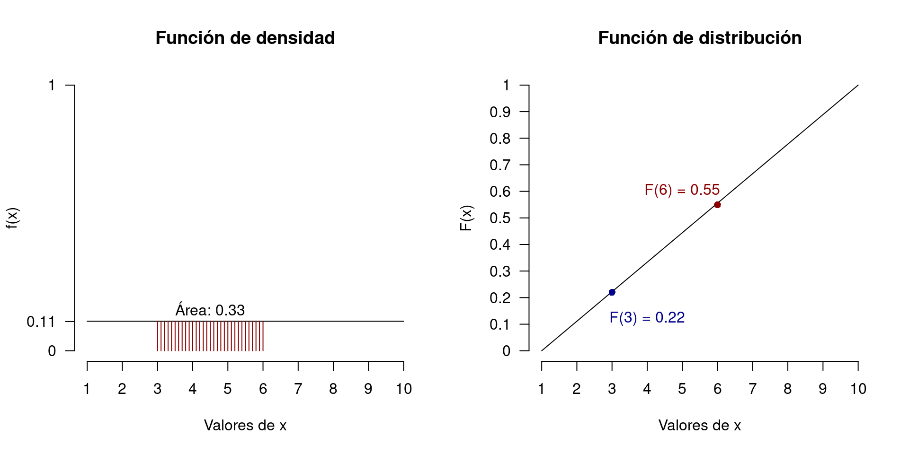

1.2 Función de densidad y distribución
Al igual que una v.a discreta, una del tipo continua posee su propia expresión para definir una función de distribución y densidad. Las expresiones son las siguientes:
Dado un espacio de probabilidad y una v.a continua \(X\). Decimos que \(X\) tiene distribución continua si la función de distribución \(F_X(x)\) puede representarse de la forma \[\begin{equation} F_X(x)= \int_{-\infty}^x f_X(u)du, \tag{1.5} \end{equation}\] donde \(f_X(x)\) es una función no negativa y Lebesgue integrable (para este curso nos bastará utilizar Riemann integrable).
La función \(f_X(x)\) se denomina función de densidad de la variable aleatoria \(X\). Algunas propiedades de esta función son:
- \(\displaystyle\int_{-\infty}^{\infty}f_X(u)du = 1\).
- Si \(f_X(u)\) es continua en todos los puntos, entonces \(F'_X(x) = f_X(x)\) para todo \(x\) (también cierto en caso puntual).
Ejemplo: Consideremos la siguiente función de densidad de una variable aleatoria \(X\)
\[ f_X(x) = \left\lbrace \begin{matrix} \displaystyle\frac{1}{b-a} & \text{si } x\in(a,b)\\ 0 & \text{si } x\notin(a,b)\\ \end{matrix} \right. \] Primero, verifiquemos si la integral en todo el dominio es igual a 1. \[\begin{equation} \notag \int_a^b \frac{1}{b-a} du = \frac{1}{b-a}\int_a^b du = \frac{1}{b-a}(\left.u\right|_a^b) = \frac{b-a}{b-a} = 1 \end{equation}\]
Esto implica que la función de densidad está “bien definida.”
Ahora, determinemos la función de distribución \(F_X(x)\). \[\begin{equation} \notag F_X(x) = \int_a^x \frac{1}{b-a} du = \frac{1}{b-a}\int_a^x du = \frac{1}{b-a}(\left.u\right|_a^x) = \frac{x-a}{b-a} \end{equation}\]
La figura 1.1 muestra la relación que existe entre ambas funciones en el intervalo \((1,10)\). En particular, el área de bajo la curva de densidad desde el extremo izquierdo hasta 5, es igual a evaluar el 5 en la función de distribución. Ambas funciones son admisibles para el cálculo de probabilidades, ya que
\[\begin{equation} P_X(X \leq x) = F_X(x) = \int_{-\infty}^x f_X(u)du, \tag{1.6} \end{equation}\]
lo cual, en el caso del ejemplo es
\[\begin{equation} \notag P_X(X \leq 5) = F_X(5) = \int_{1}^5 f_X(u)du = 0.44, \end{equation}\]
Figure 1.1: Relación entre la función de densidad y distribución
Como bien se puede apreciar, el ejemplo calcula expresamente el área de bajo la curva de la función densidad desde el extremo izquierdo del dominio hasta el 5. Sin embargo, es posible calcular áreas de entre puntos que no sean necesariamente los extremos, por ejemplo, entre 3 y 6.
La diferencia está en como determinar el área calculada en la función de densidad desde la función de distribución. Para ello contamos con la siguiente propiedad:
\[\begin{equation} P_X(a\leq X \leq b) = \int_a^bf_X(u)du = F_X(b) - F_X(a), \tag{1.7} \end{equation}\]
la cual, en el caso del ejemplo se traduce en:
\[\begin{equation} \notag P_X(3\leq X \leq 6) = \int_3^6f_X(u)du = F_X(6) - F_X(3) = 0.33, \end{equation}\]

Nota: En la propiedad (1.7) los signos de desigualdad pueden ser estrictos o no, ya que no afecta al cálculo de integración ni a la propiedad en si.
Otra propiedad a tener en cuenta, es el hecho de que la probabilidad puntual de un v.a continua es cero, es decir,
\[ P_X(X = x) = 0 \text{, } \forall x \in R. \]
Está propiedad es verificable utilizando los mostrado en (1.7).